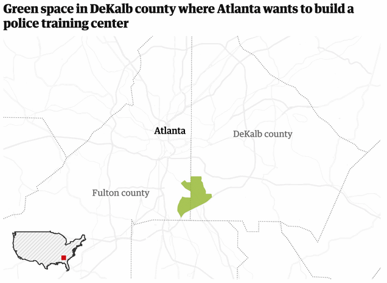

JUNE 2022
Cop City is a proposed $90 million+ police training compound backed by the Atlanta Police Foundation and its corporate patrons like Cox, Delta, the Koch brothers, and Home Depot, to name just a few. At over 300 acres, Cop City will be the largest police training facility in the United States and is slated to include a mock city where police will train with firearms, tear gas, helicopters, and explosive devices to repress protest and mass unrest, much as they did during the 2020 George Floyd protests. Cop City will hyper-militarize law enforcement, equipping police with a site to train for the suppression of Atlanta's diverse Black and working-class communities.
Slated to be twice the size of already oversized police training facilities in New York and Los Angeles, Cop City, if completed, will serve as a national model of police militarization and budgetary bloat. The land slated for development into Cop City has long been the site of racialized violence: the land was violently stolen from the Muscogee (Creek) nation, later became the site of a 19th century slave plantation, and was a forced labor camp (the Old Atlanta Prison Farm) as late as the 1990s.

Blackhall Studios is a film production studio owned by a private equity group, Commonwealth Group. Due to a massive massive corporate buy-out and bad publicity, Blackhall has just been rebranded as Shadowbox Studios, but has not changed its plan to threaten the forest or its dependence on public subsidies. Their Chairman/CEO Ryan Millsap acquired 55 acres of forest on Bouldercrest Road in 2017. Upon completion of the purchase, the movie company has realized that flooding and grading problems make the land unsuitable for their proposed use: to build the largest soundstage complex on Earth.
Dekalb County has happily handed over public resources to serve this end, offering massive tax incentives, and giving Blackhall a large portion of Intrenchment Creek Park. Dekalb County Commission has announced they plan to bulldoze nearby historic Thomasville Cemetery in an adjacent neighborhood to build an $5 million intersection designed specifically for semi-trucks in order to service Blackhall Studios.
At once a movement, slogan, and media platform, Defend the Atlanta Forest (DTF) is a fight for the future of Atlanta. DTF is a social movement, not an organization or group of people. As such, it has changing and diverse participation from grassroots groups and individuals dedicated to fighting the creeping dystopia of police militarization and ecological ruin. As a slogan, "Defend the Forest" is a declaration of opposition to the destruction of the South River/Weelaunee Forest and the construction of both the Cop City training compound and Blackhall Studios's Soundstage Complex.
While the movement is decentralized and has no official leadership or spokespeople, this website is a media platform for sharing important information, news, actions, and events. Defend the Atlanta Forest does not speak for the movement as a whole, but media requests concerning DTF can be routed through our email or website.
On the heels of the historic 2020 uprising, following the murder of George Floyd by the Minneapolis Police Department, the current movement inherits all of the wisdom and ingenuity of those unforgettable days. After millions marched, demonstrated, and took action against police brutality, the Atlanta government and countless others found creative ways to give local law enforcement even more resources and funds, under the cover of "reform" and "trainings." We do not forget that Garrett Rolfe, who killed Rayshard Brooks here in Atlanta for sleeping in his car on University Avenue, also underwent many hours of "sensitivity trainings" and "de-escalation" courses. Unequal societies can only be preserved with violence and intimidation. Many of the residents and community members on the receiving end of this violence and intimidation are opposed to the forces hoping to increase it.
The land slated for the Cop City development has been inhabited and stewarded by human civilizations for tens of thousands of years. In the last 300 years it has been colonized through the violent dispossession and genocide of the Muscogee (Creek) peoples who stewarded the land. It has been turned into a plantation reliant on slave labor, and it remained a prison farm and forced labor camp until the 1990s. The movement to prevent the development of Cop City is a fight against hundreds of years of racialized violence and ecological destruction.
The fight against ecological destruction and racialized violence in Atlanta, and beyond, are inextricably linked. Today, climate collapse disproportionately affects disadvantaged groups such as Atlanta's Black communities. Rather than investing in solutions to the environmental crisis, governments are investing in heavier policing, especially of those disadvantaged groups. Atlanta's tree canopy is one of its main sources of resiliency in the face of climate change. The threatened forest is home to wetlands that filter rainwater and prevent flooding which is a growing issue in the city. It is also one of the last breeding grounds for many amphibians in the region and an important migration site for wading birds. Nevertheless, the police and Blackhall Studios are set to bulldoze every inch of it. The period of planetary climate collapse that we are all living in will continue to pose urgent and unsettling questions to our species as we fight for dignity in a world of increasingly dangerous wildfires, floods, hurricanes, earthquakes, and mass extinction. Rather than address the problems as they really present themselves, world and local leaders are hurling us into the fire. As we fight for a life worth living, the system seems prepared to prop up its petroleum-based economy with tear gas and lines of riot police.
Defend the Forest/Stop Cop City is one part of a larger struggle dedicated to opening up a different path forward.
Media representatives should introduce themselves to forest defenders with their full name and media outlet before filming, taking photos, or beginning an interview.
The land has a long history as a site of oppression and struggle.
Include this history in your story.
Forest defenders and organizations involved in forest defense are sometimes the target of police and government repression.
Respect requests for anonymity in interviews and photos, and take photos and videos that do not show the face of anyone who has not consented to be interviewed or filmed.
SOURCE: ATLANTA COMMUNITY PRESS COLLECTIVE
@ATLANTA_PRESS
HTTPS://ATLPRESSCOLLECTIVE.COM/
As Public Opposition Grows, Atlanta Police Attempt
to Begin Work on Cop City, Protestors Occupy Trees
June 6, 2022
Reeves-Young Has Backed Out!
April 25, 2022
Atlanta-area Park Carelessly Destroyed: Bulldozer
and Cops Escorted Out of the Atlanta Forest
March 9, 2022
DEFENDTHEATLANTAFOREST@PROTONMAIL.COM
@DEFENDATLFOREST
@DEFENDATLANTAFOREST